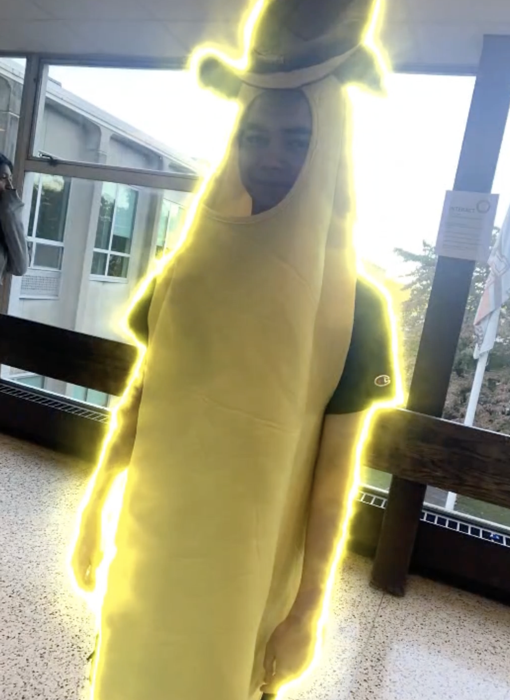

jgwentworth@gmail.com | 877-cash-now
jgwentworth@gmail.com | 877-cash-now
Dear esteemed reader, your companionship on this expansive journey through the labyrinthine corridors of my life is a cherished privilege. Together, let us embark on an odyssey of self-discovery and introspection, delving deeper into the annals of time to uncover the genesis of my existence, nestled in the quaint and idyllic hamlet of Brooksville. Here, amidst the undulating hills and verdant landscapes, the tapestry of my life began its intricate unfurling. Born into the embrace of a family of modest means, I emerged as the second progeny amidst a constellation of three siblings. My parents, David and Emily, were paragons of diligence and fortitude, instilling within me the virtues of resilience, compassion, and integrity from the tender age of my inception. Their unwavering commitment to nurturing my nascent spirit with unwavering love and guidance laid the cornerstone for the ethos that would come to define my character in the years that followed. The panorama of my childhood in Brooksville was a tableau of bucolic splendor, adorned with the vibrant hues of innocence and wonder. Enveloped by the embrace of nature's bounty and serenaded by the symphony of chirping birds and rustling leaves, I reveled in the simple yet profound pleasures that abounded in our tranquil enclave. From frolicking amidst sun-dappled meadows to constructing makeshift forts beneath the canopy of towering oaks, each day was an odyssey of discovery and delight. In the embrace of familial bonds and the fellowship of kindred spirits, I forged enduring connections that would accompany me on the meandering path of life. The camaraderie of neighborhood friendships and the warmth of communal gatherings imbued my childhood with a sense of belonging and kinship that remains etched in the recesses of my memory to this day. As the verdant tendrils of time unfurled, ushering me forth into the realm of adolescence, the landscape of my world underwent a metamorphosis. School emerged as an arena of intellectual exploration and social navigation, where I endeavored to navigate the labyrinthine corridors of academia, sports, and interpersonal dynamics. It was within the hallowed halls of learning that I first encountered the alchemy of literature and the transformative power of storytelling. My voracious appetite for knowledge and penchant for self-expression found solace in the written word, as I delved into the realms of poetry, prose, and narrative discourse. The act of crafting tales and weaving narratives became a cathartic outlet through which I sought to illuminate the kaleidoscope of human experience, capturing the essence of emotion and imbuing my words with the hues of empathy and insight. Despite the tempestuous tides of adolescence and the inevitable trials that accompanied its tumultuous currents, I remained steadfast in my pursuit of enlightenment and self-discovery. Encouraged by the guidance of mentors and the unwavering support of loved ones, I honed my craft as a wordsmith, penning poems, short stories, and essays that served as vessels for the expression of my innermost thoughts and feelings. As I basked in the halcyon glow of youth and the burgeoning promise of tomorrow, I embraced the journey that lay before me with a sense of optimism and anticipation. Little did I know that the road less traveled would beckon me forth, ushering me into realms of uncertainty and adventure that would test the bounds of my courage and fortitude. Join me, dear reader, as we traverse the threshold of time and embark on a voyage through the chapters of my life. From the tranquil hamlets of Brooksville to the bustling thoroughfares of adulthood, let us unravel the tapestry of experiences that have shaped the contours of my existence and imbued it with meaning, purpose, and boundless possibility.
Hello, I am Aidan Dipasupil.
